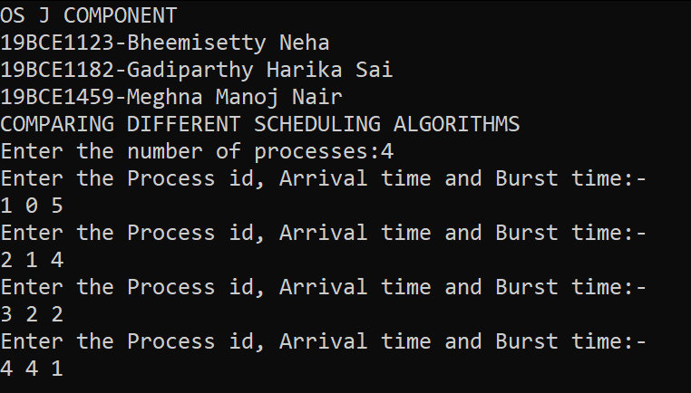

Considering the viability and feasibility, we have considered five conventional CPU scheduling algorithms which include FCFS, SJF, RR, Prioirty and SRTF algorithms. We computed the code and algorithm to execute these algorithms through C coded language and compared the results obtained. On analysing we realised that each of these algorithms in one way or the other does possess a major drawback which tends to hamper and reduce the efficiency of the CPU and the system to its entirety.
Furthermore, to ensure that the computerised algorithms match the concept and logic of the algorithm, we have manually compared the calculations for each algorithm for a given set of processes, arrival times, and burst times. Given below are the results obtained for the conventional algorithms which we have coded using C++.

Details pertaining to processes

Results of FCFS Algorithm

Results of SJF Algorithm
Results of SRTF Algorithm
Results of RR Algorithm
Results of Priority Algorithm
After the successful implementation of programs for each of the CPU scheduling algorithms, and on comparing the turnaround time and waiting time for the scheduled processes, we can clearly say that the proposed hybrid algorithm is comparatively more efficient in majority of the cases as it requires reduced turnaround time and waiting time in most of the cases. This is because the hybrid algorithm is an amalgamation of both SJF and priority algorithms. If the arrival time of all the processes is the same, then the hybrid algorithm adopts the SJF approach.
Results of Hybrid Algorithm